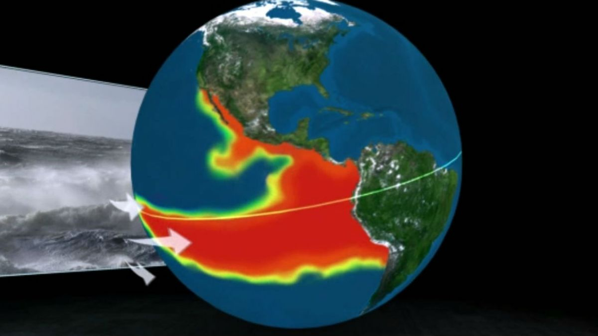
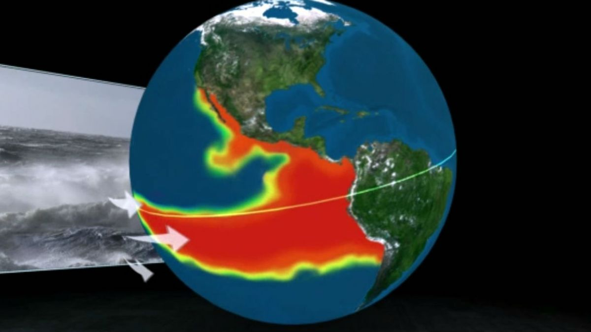

Fenómeno del Niño
El fenómeno del Niño es un evento climático y oceanográfico que provoca el calentamiento anormal de las aguas superficiales del Pacífico tropical. Esto puede alterar los patrones climáticos a nivel mundial, causando lluvias intensas, sequías y eventos climáticos extremos en diferentes regiones. También afecta a la biodiversidad marina y forma parte de un ciclo natural llamado El Niño-Oscilación del Sur (ENOS), que incluye la fase opuesta conocida como La Niña. El estudio y la comprensión de este fenómeno son cruciales para la predicción del clima y la implementación de medidas de mitigación y adaptación. Organizaciones internacionales como la Organización Meteorológica Mundial (OMM) monitorean el fenómeno y proporcionan información para ayudar a los países a prepararse y responder a sus efectos.